Yootopia
Project Type Personal Project
Research Methods literature review, Interview, Case study, Usability text
Tools Illustrator, Axure
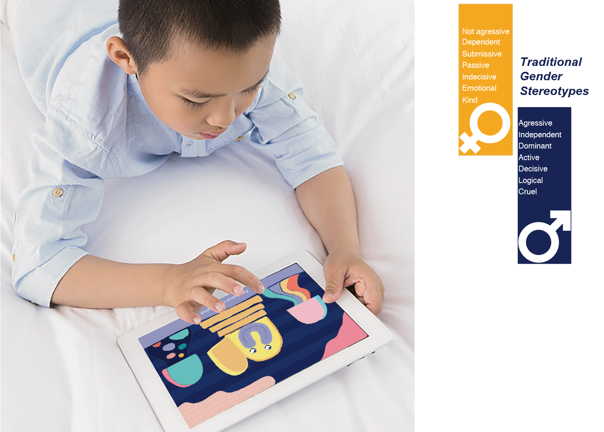 There are Gender stereotypes everywhere around us. In order to stop its boost, it is better to eliminate stereotypes intendedly at an early age. YOOTOPIA is such an app that helps kids grow up naturally, with their talent fully respected and not limited by stereotypes.
Background Research
The Nature of Gender Stereotype
Gender stereotype is initially generated between 3-5 years old and it is difficult to be changed since then. Therefore, it is curtail period to lead them to have a proper attitude towards gender, to ensure that people‘s development and talent not be limited by their gender.
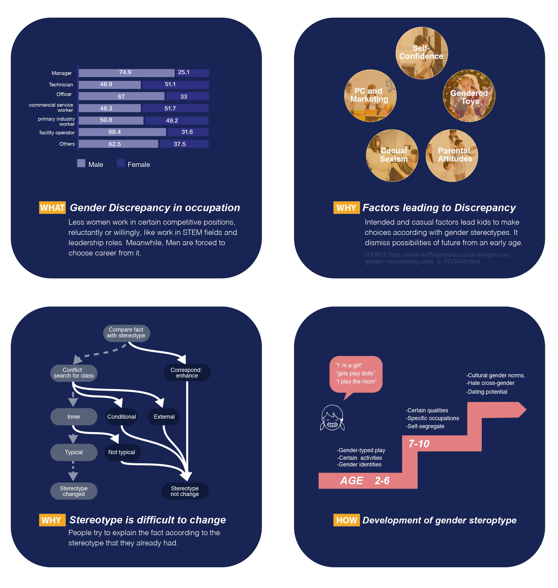
They should be encouraged to have good qualities no matter it is “girlish” or “manly”.
Further Research
Desk research
3 typical representations of gender stereotypes
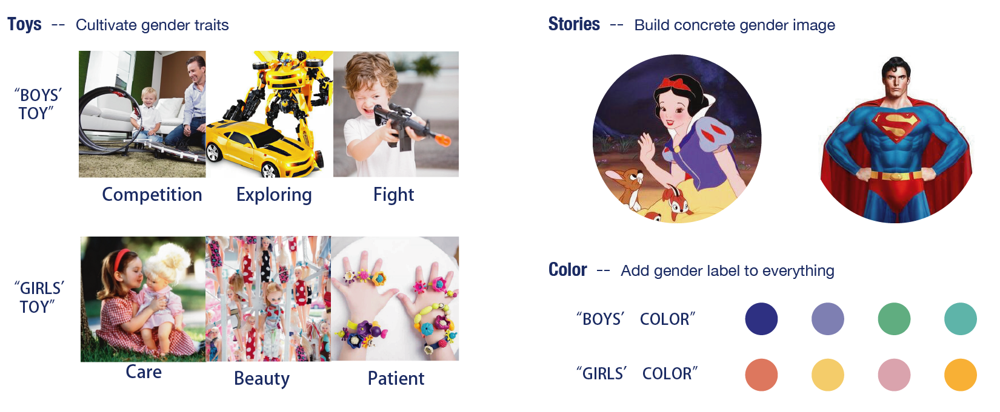
Field research
In order to explore visual language for kids aged 3-5 and their parents’ opinion, I organized a workshop In Yangguang Kindergarten, located in Changzhou, China.
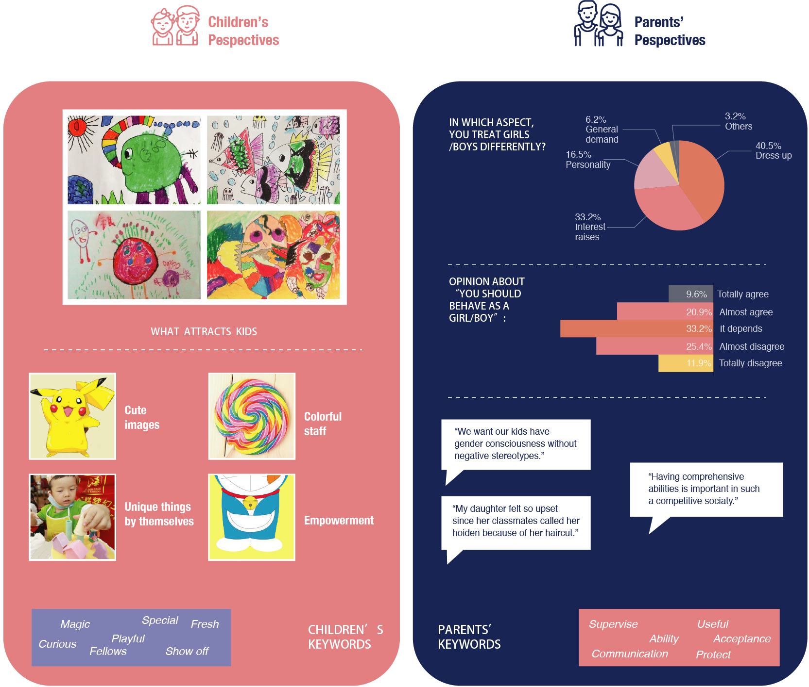
Analysis
3 typical representations of gender stereotypes
Undeniably gender is the most apparent feature of kids, so they can hardly escape from it in real life.
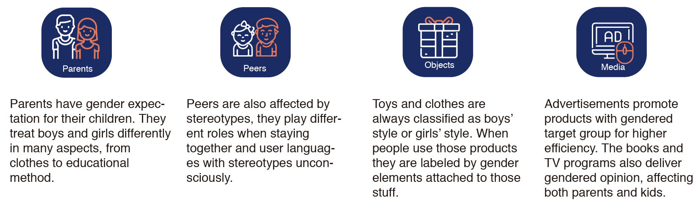
Game as the Medium
For kids aged 3-5, playing game is their main activity, as well as the way they gather knowledges and form personali- ties. Game is the joint of the elements above. Unfortunately but typically, parents choose the game for children when they buy certain toy in the market, and children also conduct gendered play with each other. Chosen game as an ideal medium, I conduct a few case studies.
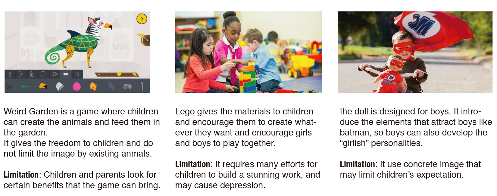
Ideation & concept
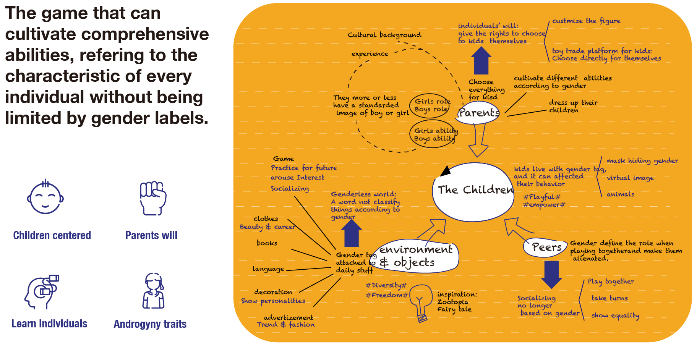
Products
Wireframe
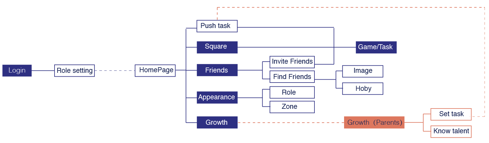
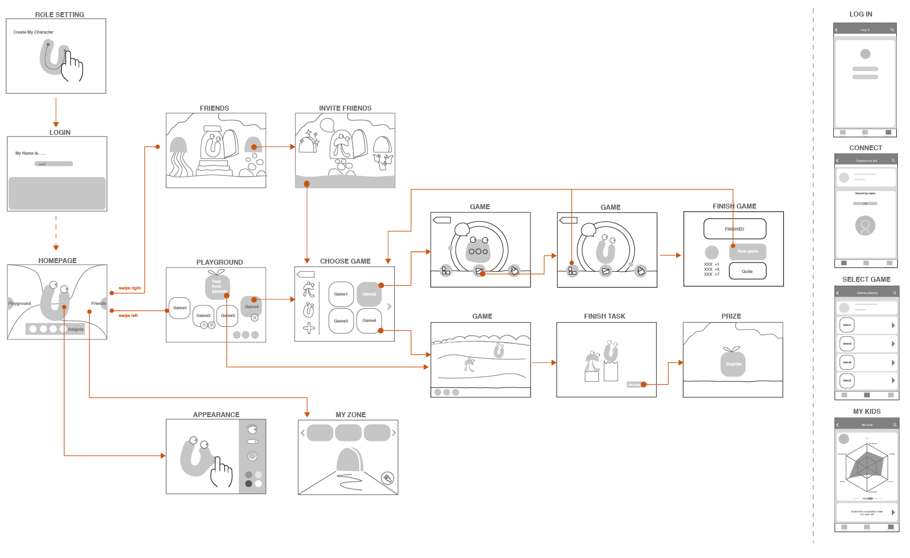
User Interface
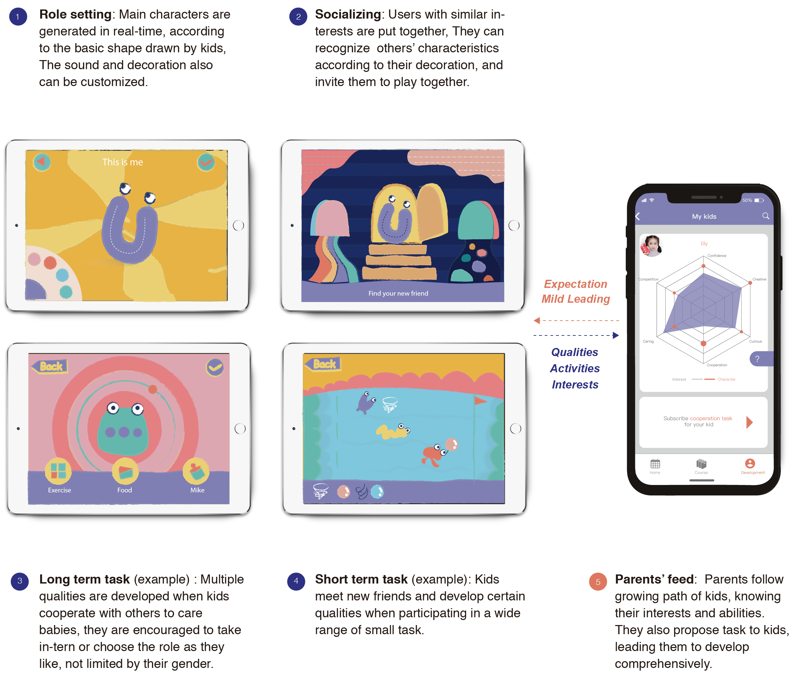
The Whole Story
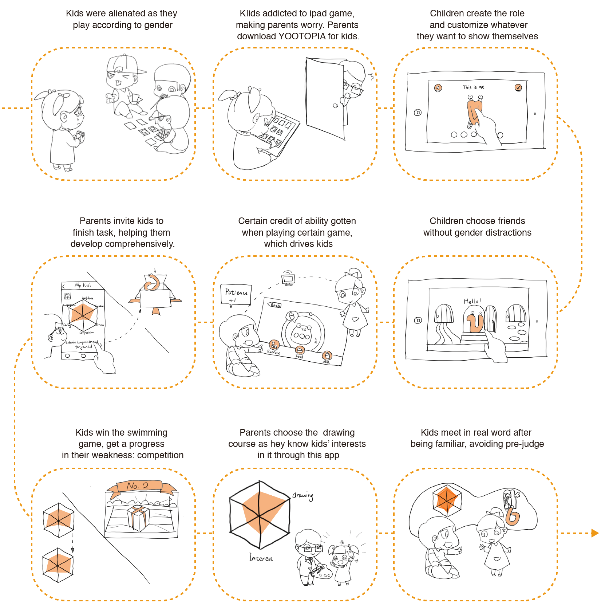